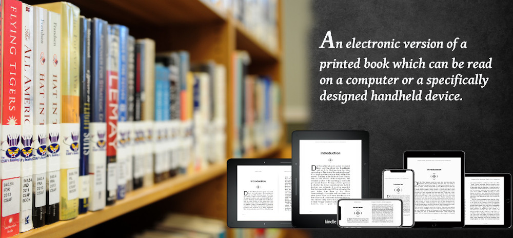

We offer complete digital typesetting solutions. Our technology is based on powerful text formatting programs TeX, LaTeX and related packages, Metafont, Metapost, PSTricks and PDF utilities.
Our office is setup in the picturesque town of Srirangapatna, an island surrounded by river Kaveri about 125 Kms from Bangalore. We work mainly on the Linux platform and use / contribute to the Free and OpenSource software.
We can handle various stages of Journal production from preparing electronic versions from manuscripts to producing PDF / HTML / XML outputs for printing, Web and archiving, including proofing, copy editing and preparation of various Indexes. We can write TeX LaTeX class / style files and develop packages for special requirements. We can process various source formats -- MSWord, Word Perfect, plain ASCII -- and convert them to uniform TeX LaTeX files for final production.
Sriranga is a pioneer in the field of digital archiving of indic language material and artistic works,.
We have developed a mobile application called Tungalahari for Sringeri Math.
In Sriranga we use latest web technologies like Apache, PHP, nodejs, electron
Our main purpose of starting this company is doing a research in Indic computing.
© 2018 Sriranga Digital Software Technologies, Srirangapatna, Mandya, INDIA